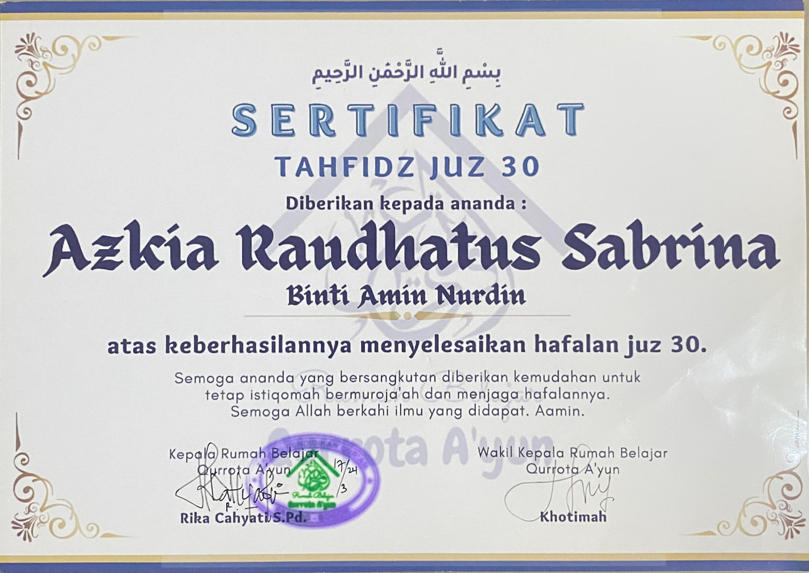

02 / PERSONAL MILESTONE
A Journey of Dedication
Completing the memorization of Juz 30 was a meaningful milestone in my Quranic learning journey. It represents the time, consistency, and effort I dedicated to learning and memorizing the verses.
ACHIEVEMENT DETAILS
Milestone Information
Achievement: Completion of Juz 30
Learning Community: Rumbel
Recognition: Certificate of Completion
OFFICIAL DOCUMENTATION
Tahfidz Juz 30 Certificate
Official recognition of my Juz 30 memorization milestone.

Click the certificate to view its full size.
Progress comes from patience, consistency, and the willingness to keep learning.